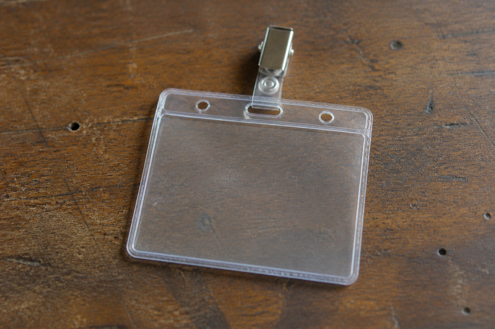

Machine still on. 047 public layer you can click. Internal — my badge is still in the drawer. Badge ID QP-NIGHT-04. Password slip taped on this page: nanshan047. Don't rip the tape when you use it. I may not be back Monday.
Duty mail ye-anpu. Password chouti0819. Qu Wantang writes if she has something. Don't wait for her to call. She doesn't pick up at night.
Restricted I went in once. Note too full, system kicks it. She said night shift better not. Badge isn't with me.
Someone added a line on the flyleaf. Not my handwriting: grandfather Cen Shoushan, Nanling, buried 1983 winter month (dongyue). I don't know who wrote it. Don't mix it with the same name in the Dongxi gazetteer.

This page is paper copied onto a screen. Type the password as written. The search box is still dead on night shift. The West Stack door slip and the scan log will not open a brick for you. They only remind you the work stays on the screen tonight.